“U-Design” Premium WordPress Theme Documentation by “Andon” for theme v1.6.0
Created: 04-June-2011
By: Andon
Email: use my ThemeForest profile page
Thank you for purchasing my theme. If you have any questions that are beyond the scope of this help file, please feel free to email me via my ThemeForest profile page here. Thanks so much!
For more information please refer to the license included with the theme or Licensing Terms on the ThemeForest site.
Table of Contents
- Installing the Theme
- Recommended Plugins
- Front Page
- Front Page Sliders
- General Options
- Portfolio Section
- Blog/News Section
- Contact Page
- CSS Files and Structure
- Additional Information
- PSD Files
- Font Settings & Custom Colors
- Sources and Credits
A) Installation - top
To install the U-Design Theme you need WordPress 3.0 or later.
IMPORTANT: Make sure you unzip the downloaded file from ThemeForest first (DON'T upload it to your server yet). The content of this file contains the actual theme zip file called "u-design.zip". This is the theme file. Now, to install the theme follow one of the following two methods:
- Upload the u-design.zip file through the WordPress admin backend (This will ONLY work if the server that hosts your website allows upload limits greater than 6 MB. Please note, most hosting providers have only up to 2MB file upload limit):
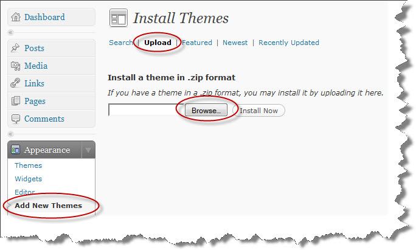
- Method 2, unzip the u-design.zip and upload the extracted u-design/ folder to <wordpress install directory>/wp-content/themes/ with your favorite FTP client so that the structure looks like:/wp-content/themes/u-design/.
Once the upload is complete go to the WordPress administrator backend and activate the theme (the theme should appear now under Appearance --> Themes)
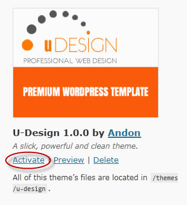
The theme's options page should appear now near the bottom of the sidebar under the name: U-Design Options:
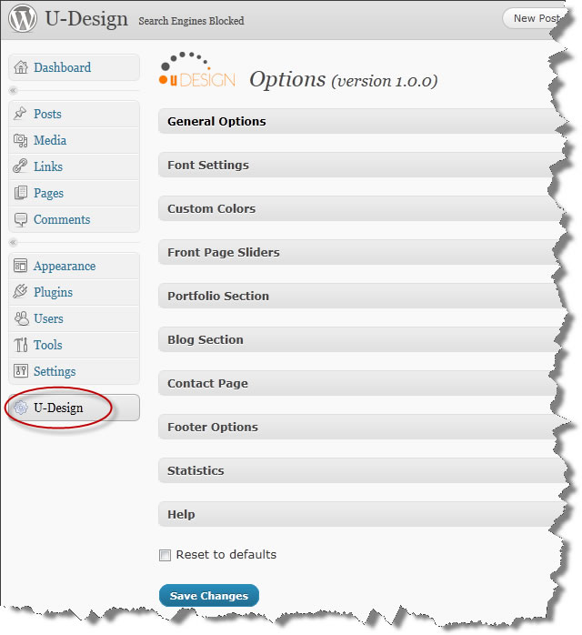
IMPORTANT: Once you've installed the theme successfully you will need to install some recommended plugins (please refer to the next section: Recommended Plugins) necessary to get the most functionality for the theme.
B) Recommended Plugins - top
The U-Design theme has been prepared to work with the following plugins to enhance its functionality. The theme will function without these plugins, however to get the most out of the theme in terms of user experience I strongly recommend installing.
Recommended Plugins:
- Get the Image - This plugin is an easy-to-use image script for adding things such as thumbnails and feature images.
- WP-PageNavi - This plugin provides the pagination for pages.
- U-Design Shortcode Insert Button - Install the plugin by uploading the udesign-shortcode-insert-button.zip (look in the 'plugins/' directory that came with the theme) through the Plugins->Add New -> Upload interface. This plugin improves the user experience by adding a button to the Post/Page editor allowing for the easy insertion of ANY U-Design Shortcode straight from the editor UI.
Optional Plugins:
- WP-CommentNavi - This plugin provides the pagination for comments.
- flickrRSS - This plugin allows you to display Flickr photos on your WP Blog. It supports user, set, favorite, group and community photostreams, and is relatively easy to setup and configure via a settings panel. I have included a customized version of the "flickrRSS" plugin. You could simply install the plugin by uploading the flickrRSS.zip (look in the 'plugins/' directory that came with the theme) through the Plugins->Add New -> Upload interface. Then you should be able to see a new FlickrRSS Widget under Widgets. Also, you can configure your Flickr account through Settings-> FlickrRSS:

- WP125 - Easy management of 125x125 ads on your blog. Ads can be run for a specified number of days, and will automatically be taken down. Track clicks too. Here's what the Manage screen looks like in the backend:

C) Front Page - top
Without any content the Front Page will only display the default slider and the footer.
To get some content into the Home page go the admin backend Appearance --> Widgets and drag-and-drop widgets to the Widget Areas associated with the Front Page. Those are:

For example, if you would like to add some text to a Widget Area, drag-and-drop a Text Widget, put some text into it, save it, go to the Front page of the site and Refresh to reflect the changes. The above listed widget areas will automatically resize to extend the full width of the page. Only the "Home Page Column 1" has the option to stay fixed width. You could set that under the U-Design -> General Options -> Home Page Column 1. By default fixed width for "Home Page Column 1" widget area is disabled. The idea behind this options is that in some cases you might want to have this widget area to serve as a left sidebar on the home page, or display the latest posts in it, etc. and use the remaining space for wider content, I'm sure you could put your creativity to good use here.
For your reference, the "Home Page Before Content" widget area in the theme's demo site, for instance, I used a Text widget without a title, and I used some inline styling to get the look I wanted for that widget area. I have also provided the code used in the demo in the Get the Code page. Here's a map of all the Widget areas available in the Front page (darker grey represents the widget areas):

To be able to take advantage of the above shown widget areas make sure you have the Home Page setup in the following way:
Settings → Reading → Front page displays and select "Your latest posts"
Note: The above configuration should be like this by default, so you wouldn't have to do anything.
D) Front Page Sliders - top
The U-Design theme comes with five sliders: Flashmo (Flash based), Piecemaker (Flash based), Piecemaker 2 (Flash based), Cycle 1 (full width image) and Cycle 2 (smaller image with text and button). The three sliders could be configured from the theme's options page, for that go to U-Design Options --> Front Page Sliders.
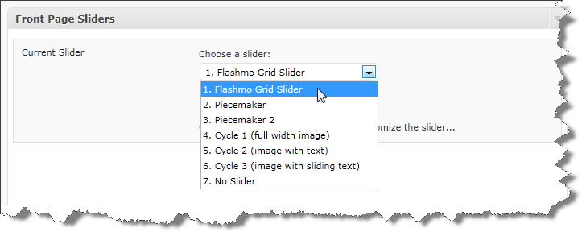
- Flashmo Grid Slider: Most of the settings are self explanatory from the options page, feel free to try out various combination of Flashmo Grid Slider settings to get the desired slicing and transition effects. For best results size your images 940 x 400px. You can configure transition effects for each slide individually:
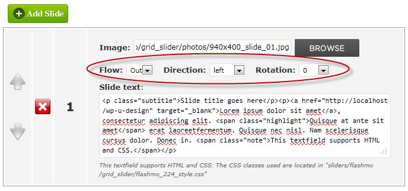
- Piecemaker Slider: Most of the settings are self explanatory from the options page, feel free to try out various combination of piecemaker settings to get the desired slicing and transition effects. For best results size your images 940 x 360px, however bigger and smaller sizes would also work. Just make sure that you update the width and height fields under the piecemaker's settings to match your slides' exact size. Use the "Browse" for each slide to upload your images. After a successful upload only the file name will be displayed in the field above the "Browse" button. Do NOT use this field to enter entire image paths or url's. Another important note I should mention is about where the images are uploaded. Because of the nature of the Piecemaker slider, the images can only be uploaded in one location. This is because the relative path to the images has to be specified in the Flash file before it's saved to generate the final swf file. The location I chose for the slides to be uploaded in is under <themes-directory>/u-design/sliders/piecemaker/images/. You don't need to worry about the location, the upload is done automatically. This is just for your reference in case that you need to get to the images manually.
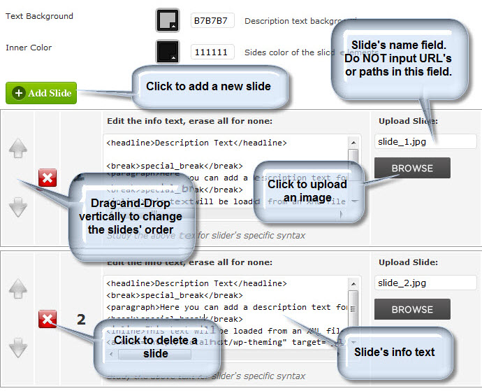
The Info or Description text uses a special formal for formatting text. The default text should serve you as a good example as to how to create paragraphs, line breaks and links. You format the info text to full extent with the "piecemakerCSS.css" file located under <themes-directory>/u-design/sliders/piecemaker/images/. For additional documentation on the Piecemaker please refer to its website here. - Piecemaker 2 Slider: Most of the general slider settings are self explanatory from the options page, feel free to try out various combination of piecemaker settings. For best results size your images 940 x 360px. The Piecemaker 2 slider compared to the Piecmaker slider allows for the addition of not only images but also Flash and Video. What is important to understand that the Flash files supported have to be SWF files. The SWF files must be ActionScript 3 and Flash CS4 or above to work with the native Flash 3D engine. Make sure to use the WordPress Media Manager to upload the files.
According to the Piecemaker 2 documentation the accepted file formats for Video are MPEG4 width H.264 Codec, as well as F4V and FLV. Inserting a YouTube or Vimeo link will not work, you will have to save the actual file as one of the above supported formats and then upload it to your site, reference the link to that file and that should do the trick. Make sure to use the WordPress Media Manager to upload the files.
The Slide Text can hold a description text, which can be formatted with simple HTML tags. Which HTML tags are supported, is determined by the piecemaker.css file. Per default you can use <h2>, <h2>, <p>, <p-italic>, <a>. But you can add and specify as many tags as you want, for example different headline types. If you want to use different fonts, you will have to make sure that you embed these fonts in the Flash file. If you don't add any text to the Slide Text field, no info text appears.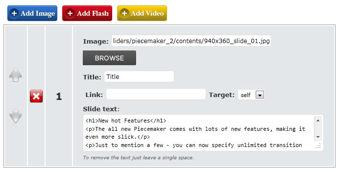
Transitions: You can add as many transitions to the Piecemaker 2 as you want. These transitions will be started in the order they are specified below. This order is entirely independent from the order of the slides above. Once the last transition is reached, it starts over again with the first transition. Please refer to the Piecemaker 2 Options page in the theme's backend where you will find more information on how the transitions work. You can drag-and-drop transitions to arrange their position as well as add new ones and delete them: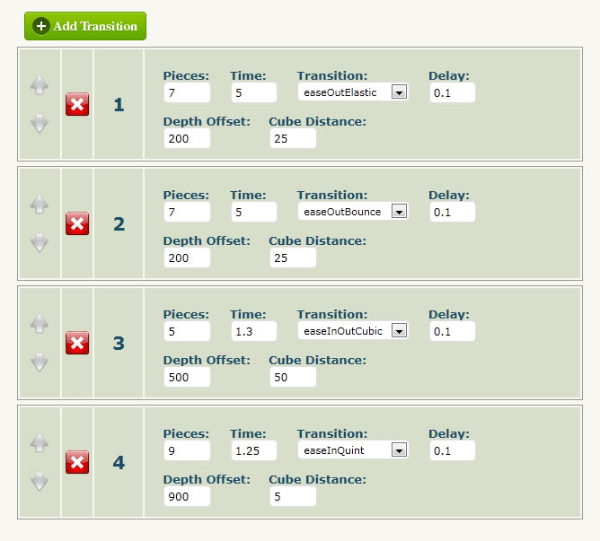
- Cycle 1 Slider: With the Cycle 1 slider you can use the automatic image uploader or you could specify a URL or path to your images. Either way it should be fine. Slide image dimensions: with frame enabled (default state) image dimensions are 914px by 374px (width by height). Without the frame image dimensions are 940px by 400px. Depending on which option is selected, create and upload images with the corresponding dimensions for optimal quality.
- Cycle 2 Slider: The image size is FIXED to 476px by 287px (width x height). If you use a larger image then anything outside 476px by 287px area will not be visible. In the slide text field you could use plain text or some html, I have also made sure that you could use the typography list styles included with the theme (see theme's typography). The button will only display if a link is inserted in the Link field and the link will be automatically applied to the button. You can also choose from 'light' and 'dark' button styles.
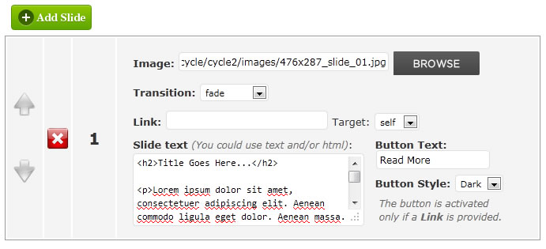
- Cycle 3 Slider: The image size is FIXED to 940px by 430px (width x height). I have provided the PSD templates for your convenience to use to generate the slider images. The first one is a jpeg, this image is the base, it kind of serves as the background image against which the second image and text will slide over. The second image is a transparent png which is meant to slide over the first image either with some text or some smaller graphic but you need to maintain the transparency and try not to cover the entire first image with the second one's graphics to get the desired effect. The "Slide text" field is for the third component (the sliding text). The canvas area for the text is also 940px by 430px, the only difference now is that you have to manipulate the text block with HTML. I have provided as many inline CSS properties as I can think of to give you a great start in being able to manipulate the text block yourself, feel free to experiment with those properties. And if at any time you need the default text, you can simply create a new slide and it will come with the default text for your reference:
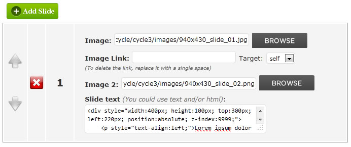
Please note: I have made a change to the slide info text formatting in regards to the "Ӂ" character used with the Piecemeker as discribed in the documentation on their website. In your text use "special_break" without the quotes instead of the "Ӂ" to avoid problems with non UTF-8 installs of WordPress as reported by some users. For example to insert a line break use the following code:
<break>special_break</break>
E) General Options - top
"A Picture's worth a thousand words...":
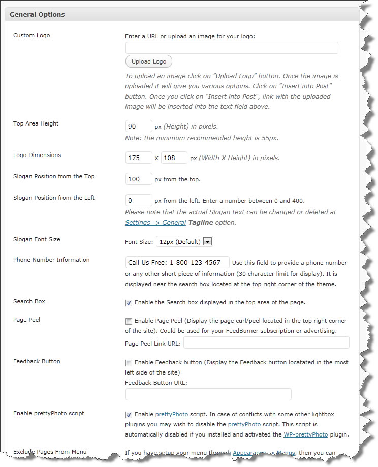
Custom Logos: Using the "Top Area Height" setting you can resize the top area of the site to accommodate your custom logo size. Depending on your logo, you might have to nudge the slogan position a bit to fit perfectly with the logo. Use the Slogan Position fields for that.
Logo Dimensions: Just a quick note about the Logo width and height. What is important to understand is that by specifying the width and height of the logo it will not change or crop your logo, the two settings are used to define the logo link click-able area. Generally those should match your actual logo image width and height. In some cases if you need to lower the logo a bit from the top, you can do that be giving a greater value for the height.
F) Portfolio Section - top
To setup Portfolio Section(s), start with creating a new page, e.g. Portfolio, or Videos. You can call it anything you like. As you have the page open for editing, choose one of the available portfolio templates as shown below:
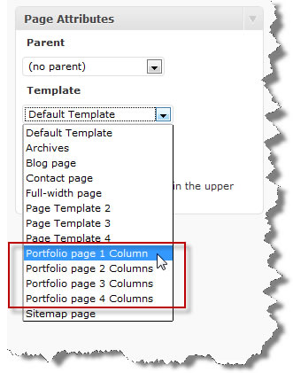
Save the page(s) and go to U-Design --> Portfolio Section and follow the instructions there:
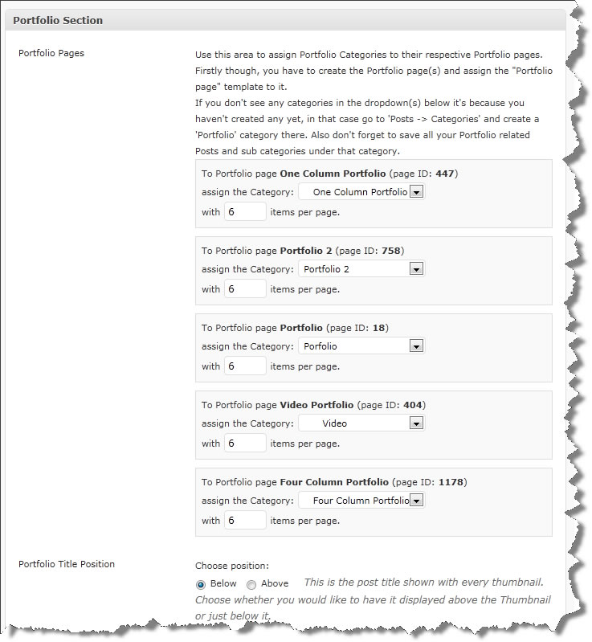
Before you get the page above you should setup your Portfolio categories make sure that they are not empty, each category needs to have at least one Post assigned to it, WordPress will hide a category if it's empty, that's why it's important to have at least one Post assigned a category. Then you can come to the Portfolio section shown above and as described in the image above, you need to associate a page with a category.
At this point you're almost done, the last thing would be to setup the Portfolio thumbnails. There are several ways to accomplish that.
One and easiest would be to use the "Get The Image" Plugin. This plugin will greatly simplify the task of grabbing the thumbnail images for your Portfolio items.
It was designed to make the process of things such as adding thumbnails, feature images, and/or other images to your blog much easier, but it's so much more than that.
- Unzip the file.
- Upload get-the-image.php file to your wp-content/plugins folder.
- Activate the plugin on your Plugins page.
- Looks for an image by custom field.
- If no image is added by custom field, check for a post image (WordPresss 2.9+ feature).
- If no image is found, it grabs an image attached to your post.
- If no image is attached, it can extract an image from your post content.
- If no image is found at this point, it will display a default image "Not Available".
If you prefer to use the custom field method add a new custom field named: portfolio_item_thumb. In the Value field, you’ll need to add the URL path to the image. Example: http://www.yousite.com/wp-content/uploads/2011/01/image-file-name.jpg
For the Preview image or video or flash of your portfolio item you can use a custom field portfolio_item_preview. Here's a full list of the available Portfolio section custom fields:
- portfolio_item_thumb (this is the item's thumbnail image)
- portfolio_item_preview (this is the item preview image/video/flash)
- portfolio_item_description (this is the item description text)
- portfolio_item_preview_title (this is the item capture text shown underneath the preview item)
- portfolio_item_link (which allows to link directly from the thumbnail to another page or site rather than displaying a preview image)
- portfolio_item_link_target (use this custom field to open the link in a new window, for that set the value field to "_blank" without the quotes)
- portfolio_item_link_rel (use this custom field to specify a link relation attribute "rel" for Portfolio thumbnails, example value: "nofollow" without the quotes)
- portfolio_item_image_attachments (use this option to pull all the images attached to a single post to the Portfolio, example value: 'yes' without the quotes)
- portfolio_item_offset_image_attachments (use this to skip the number specified of image attachments, example value: '0' or '1' without the quotes)
Note: If you don't see the custom fields area, you need to make it visible by going to the "Screen Options" tab located in the top right corner of the post edit page:


Note: The Custom Fields' names are case-sensitive.
To pull all images attached to a single post to be added to the portfolio you will need to use the following two custom fields:

Use the custom field portfolio_item_image_attachments with value 'yes' (without the quote). Optionally you can offset the number of images to be pulled from the post by specifying the custom field portfolio_item_offset_image_attachments and specify any number as value. Optionally you can disable the linking of Portfolio page items when opened with prettyPhoto lightbox, the option for this is located under the theme's "Portfolio Section":

The Post's title could be positioned either above or below each thumb. This is convenient in case that you have really long titles which could push the thumb image down a bit and misalign the thumbs horizontally. In this case the solution would be to place the titles below the thumbs.
You cold also add a "Read More" button or list styles from the theme's typography by using shortcodes or plain HTML.
The Posts used to hold each individual Portfolio item have a sidebar when viewed in the browser as posts. The sidebar displayed could be changed to be either left or right side position. You can set the position from the U-Design --> Portfolio Section. Also the sidebar could be customized further by adding various widgets to it from Appearance --> Widgets and drag-and-drop widgets into the "PortfolioSidebar" widget area like so:

Back to the U-Design --> Portfolio Section. As shown in the image below in this section the postmetadata, author name and the comment area could be excluded from the single view post:

G) Blog/News Section - top
To setup a Blog or News Section, create a Page called Blog or News or whatever you would like to call it, give it just a title and no content, and assign the template "Blog page" to it like so:
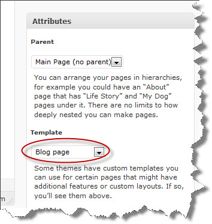
You can also change the sidebar position for the Blog pages to be either left or right. You can do that from the U-Design --> Blog Section
To customize the Blog pages' sidebar, go to Appearance -> Widgets and drag-and-drop widgets you'd like to use into the "BlogSidebar" widget area, here's an example:

By default the blog posts displayed under the Blog section will exclude all posts that are in some way related to any of Portfolio section(s). If you would like to include them uncheck the "Exclude Portfolio(s) from Blog" option.
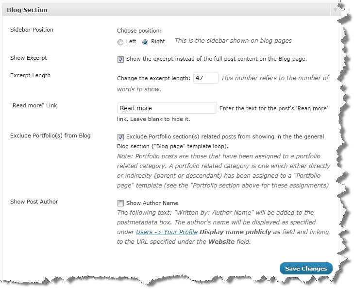
By default the Blog section will display the posts with short excerpts and a "Read more" button. However to show regular post content (not the excerpt) uncheck the checkbox "Show Excerpt" shown in the image above to accomplish this. To display a post with an image on the Blog page you need to add a Post specific image. Use the Custom Field post_image (case-sensitive) to specify the url to the image (see below for example). For best results you might want to upload a larger image. The theme will crop and resize the image to 570px by 172px (width by height). Here's an example of a post with custom excerpt and a post image. You don't have to fill in the "Excerpt" field, if you leave it empty the theme will automatically generate the excerpt for you:
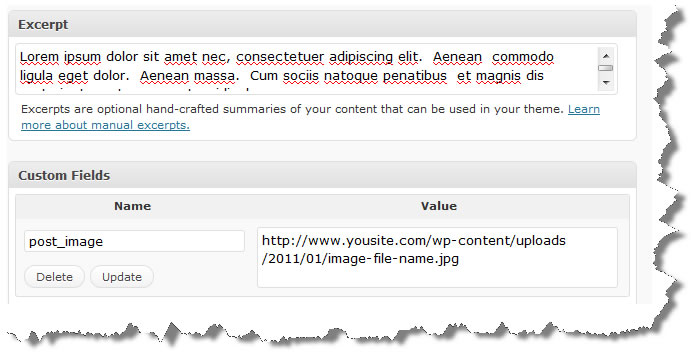
H) Contact Page - top
To setup a Contact page, create a Page called Contact and assign the template to it called "Contact page":
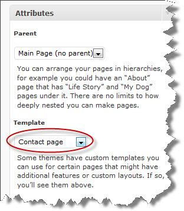
The content you enter under the Contact page will always show first in the page.
You can setup business contact information under U-Design Options --> Contact Page, that will be displayed in a table-like nicely formatted way, the configuration for that and other options could be seen here:
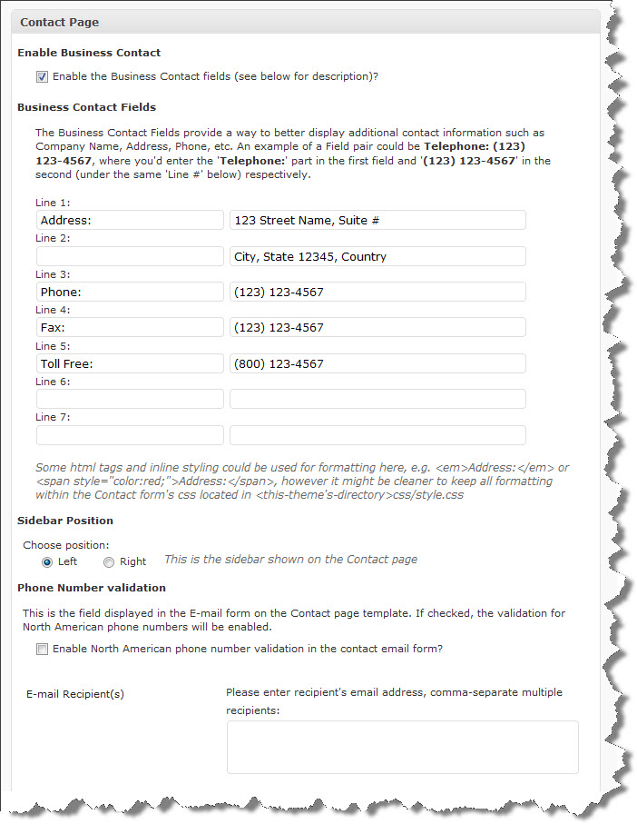
The bottom part of the Contact Page Options allows you to enable ReCAPTCHA for extra security. To use reCAPTCHA you must get an API public and private key from http://recaptcha.net/. For the rest follow the instructions on the screen:
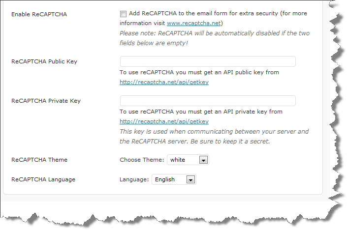
For more information on how ReCAPTCHA works please visit http://recaptcha.net/
The Contact Page template comes with its own sidebar called ContactSidebar. To add Google Maps in the sidebar use the U-Design: Google Map widget. This widget displays a location map without the need to have a Google API Key. Please, view the images below for further instructions as to how to use this widget:

Now set the width to maximum 280 and the height could be as long as you like. Then get the code and paste it into the U-Design: Google Map widget:
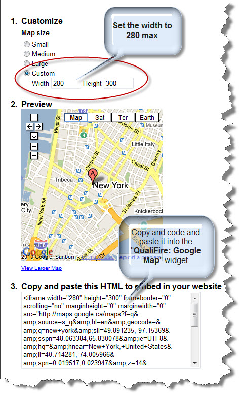
I) CSS Files and Structure - top
This theme has been implemented as a fixed width layout with the 960 Grid System. The full width of the template is 960px. For more information as to how the 960 Grid works, visit the 960 Grid System website.
All CSS files are located in the <themes-directory>u-design/styles/ subdirectory. The css files are registered and included in the <head> via my_init_styles() function located in the functions.php.
All JavaScript are registered and included in the <head> via my_init_scripts() function located in the functions.php.
The directory common-css/ and common-images/ stores all the css and images that apply to all styles and colors. Most of the 960 Grid System css files are in that directory.
J) Additional Information - top
More information and examples could be found at the U-Design demo site.
Typography and Shortcodes examples could be found under the Features menu on the demo site.
If you have any further questions, please don't hesitate to ask at the theme's Support Forum.
If your hosting provider is HostGator, you will need to contact them to request "mod_security whitelisting", you just need to mention to them that a theme you're using is running a timthumb script, they'll know what to do.
For "U-Design: Recent Posts" Widget Usage Instructions please refer to THIS discussion in the support forum.
On how to setup the 'Top Area Social Media' Widget Area, please refer to THIS discussion in the support forum.
K) PSD Files - top
In the PSD_files.zip I've included subdirectories containing all the PSDs necessary to produce the corresponding theme styles.
All PSD files contain slices of the required images. In Photoshop you just have to go File --> Save for Web & Devices... select the slices you'd like to generate (Shift+click to select multiple slices), hit "Save", at the next "Save Optimized As" dialog box under Slices dropdown select "Selected Slices" and "Save".
L) Font Settings & Custom Colors - top
Choosing fonts for your website using the U-Design theme is rather intuitive. I've added Google fonts as an alternative to Cufón fonts. One of the advantages of using Google fonts is that the actual fonts are served from an online directory the first time the users browser requests them and then cached locally. This eliminates the requirement to have the fonts available on the user's machine in the first place. Another advantage of Google fonts is that they are not JavaScript dependent and they are selectable as opposed to non-selectable for Cufón fonts. As new fonts are being added by Google to the online directory I will be updating the theme's list of fonts over time.

The Custom Colors is a very powerful feature of the U-Design theme. It allows you to customize the colors of all elements from backgrounds, links, text and menu links by section. Many of the theme's elements are designed with certain opacity so that no matter what color the background they will stay visible.
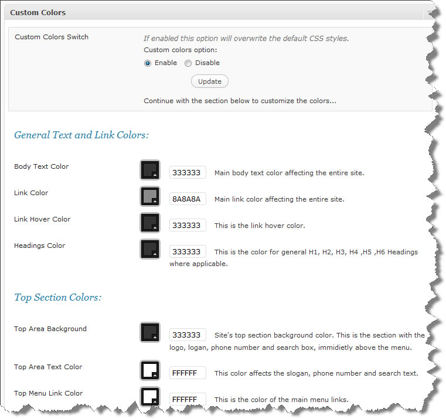
You can also upload images as backgrounds on per section bases to replace solid background colour:
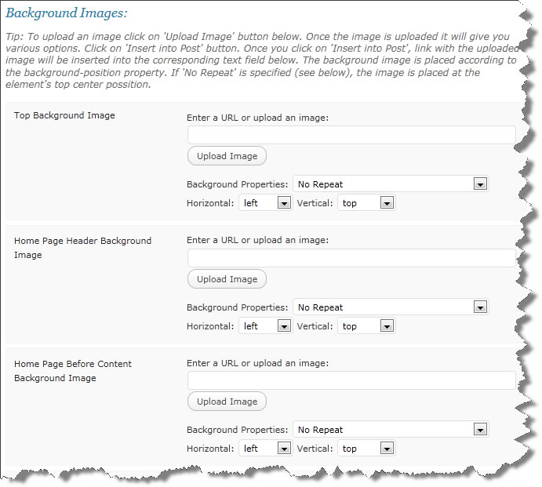
In addition, you will be able to save your custom color schemes (including any background images) that you create for future use, especially if you like to experiment with colors or like to change the look and feel of your site frequently..
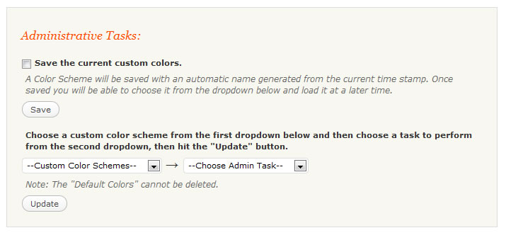
M) Sources and Credits - top
I've used the following images, icons, fonts or other files as listed.
- jQuery JavaScript Library by John Resig
- Knob Buttons Toolbar icons by iTweek
- Quartz Icon Pack by Andy Gongea
- Fugue Icons by Yusuke Kamiyamane
- realistiK Reloaded by Pavel InFeRnODeMoN
- Cufon Font Types by Simo Kinnunen
- Piecemaker Slider by Björn Crüger
- Flashno 224 grid slider by flashmo.com
- Cycle jQuery plugin by M. Alsup
- Color picker by Stefan Petre
- SWFObject by Geoff Stearns
- TableDnD plug-in for JQuery by Denis Howlett
- Uploadify plugin by Ronnie Garcia, Travis Nickels
- TimThumb script created by Tim McDaniels
- Simple Breadcrumb by Christian "Kriesi" Budschedl
- DD_belatedPNG by Drew Diller
- CoolInput Plugin by Alex Weber and Evan Winslow
- Superfish menu widget by Joel Birch
- Search Excerpt by Scott Yang
- Masked Input plugin for jQuery by Josh Bush
- flickrRSS WordPress plugin by Dave Kellam and Stefano Verna
- jQuery validation plug-in by Jörn Zaefferer
- ReCAPTCHA by Mike Crawford and Mike Crawford
- Update Notifier script by João Araújo
- Italian translation courtesy Diego Meozzi - Cartabianca Publishing
- Spanish translation courtesy argos
- Dutch translation courtesy Indigo Webstudio
Fonts used:
- Sniglet font by Haley Fiege
- Yorkville font by humanabase
- Qlassik font by Dimitri Castrique
- Aubrey font by Criselda Caecilia Titus
- Bebas font by Bagel & Co.
- Oregon LDO font by Luke Owens
- Comfortaa font by Johan Aakerlund
- Blue Highway font by Typodermic Fonts
- Geo Sans Light font by Manfred Klein
- Sansation font by Bernd Montag
- Diavlo font by Jos Buivenga
- Tertre font by Jan Schmoeger
- Eurofurence Font Type by Tobias Benjamin Köhler
- Waukegan LDO font by Luke Owens
Once again, thank you so much for purchasing this theme. As I said at the beginning, I'd be glad to help you if you have any questions relating to this theme. No guarantees, but I'll do my best to assist. If you have a more general question relating to the themes on ThemeForest, you might consider visiting the forums and asking your question in the "Item Discussion" section.
Andon